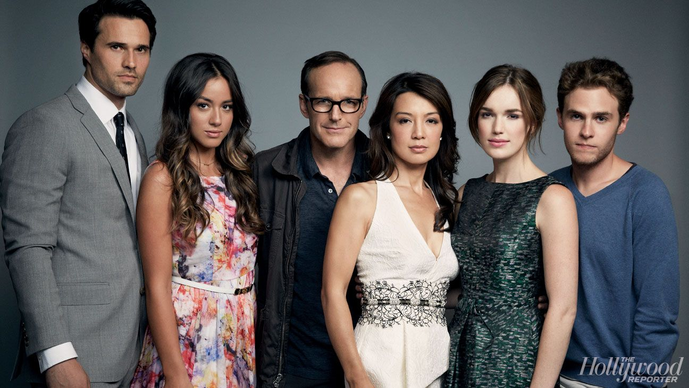

Agents of Shield
Agents of Shield is an American television series created for ABC by Joss Whedon, Jed Whedon, and Maurissa Tancharoen. The show was based on the Marvel Comics organizatin S.H.I.E.L.D.. It is often argued whether or not its is set in the Marvel Cinematic Universe, though in the early seasons since it acknowledges the continuity of the franchise's films and other television seasons, one can assume that it was originally set there and eventually breaks away from it. The series was produced by ABC Studios, Marvel Television, and Mutant Enemy Productions, and sees Clark Gregg reprise his role as Phil Coulson from the film series. During the course of the show, 136 episodes of Agents of Shield aired over the Seven Seasons, between September 24th, 2013, and Auguest 12th, 2020.It was such a big hit within the Marvel fandom with the first episode gaining 12.12 million viewers in just the US alone.
The Actors
The series had many talented actors portraying all sorts of characters. Clark Gregg, who portrays Phil Coulson, is not only an actor, but a writer and director as well. Ming-Na Wen, who plays Agent May, is well-known for her voice of Mulan in the 1998 cartoon film as wellher role in Street Fighter. Chloe Bennet,actor of Daisy Johnson, started her career in the music industry releasing two singles before moving to Los Anngeles and pursuing her acting career. Elizabeth Henstridge, who portray Jemma Simmons,is also model and director and started directing on the set of Agents of Shield and continued to do this with the shows: Gotham Knights and Superman & Lois. Ian de Caestecker, who plays Leo Fitz, has continued his acting career and most recently appeared in the 2023 show The Winter King as Arthur. And finally Brett Dalton, actor of Grant Ward, has continued acting appearing in the TV series 'Found' as Mark Trent and many other films.
Season One Episode Guide
The first season of Agents of Shield is packed with thrilling and mysterious episodes that introduce the audience to new heros and villians in the Marvel Universe. As the episodes go by the team builds their relationships and the show sets up the stage for greater battles ahead, connecting almost every episode to the final battle.
- Episode 1: Pilot
- Episode 2: 0-8-4
- Episode 3: The Asset
- Episode 4: Eye Spy
- Episode 5: Girl in the Flower Dress
- Episode 6: FZZT
- Episode 7: The Hub
- Episode 8: The Well
- Episode 9: Repairs
- Episode 10: The Bridge
- Episode 11: The Magical Place
- Episode 12: Seeds
- Episode 13: T.R.A.C.K.S
- Episode 14: T.A.H.I.T.I
- Episode 15: Yes Men
- Episode 16: End of the Beginning
- Episode 17: Turn, Turn, Turn
- Episode 18: Providence
- Episode 19: The Only Light in the Darkness
- Episode 20: Nothing Personal
- Episode 21: Ragtag
- Episode 22: Beginning of the End